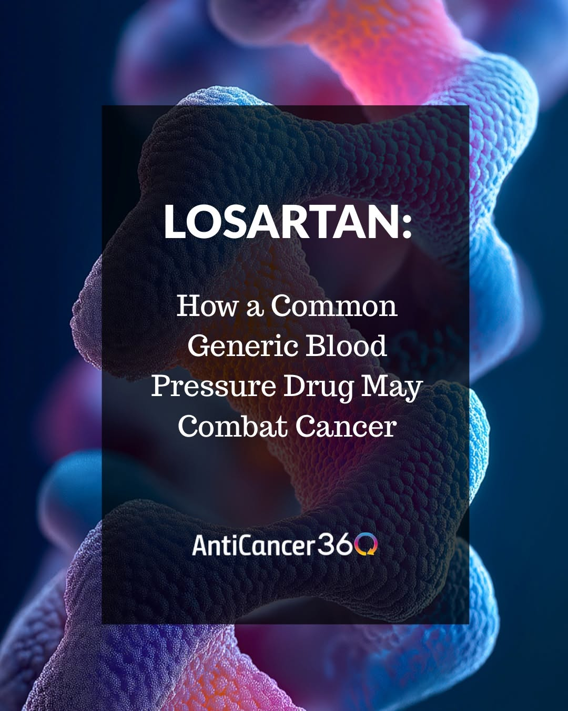

Aged garlic extract taken for 5 years alongside rosuvastatin, ACE inhibitor and fish oil
Gokhan reports using aged garlic extract for five years on top of low-dose rosuvastatin, an ACE inhibitor and fish oil, and links a video on garlic and plaque.
8 posts
Gokhan reports using aged garlic extract for five years on top of low-dose rosuvastatin, an ACE inhibitor and fish oil, and links a video on garlic and plaque.

A summary of the evidence on ACE inhibitors versus ARBs for all-cause mortality. RCT meta-analyses favor ACE inhibitors, while observational and head-to-head data are mixed or neutral, so the question is not settled. ARBs are better tolerated (less cough and angioedema).

Gokhan shares the NEJM 10-year randomized trial of infrequent zoledronate in early postmenopausal women (50-60 years) with normal-to-low-normal bone density. Zoledronate roughly halved new morphometric vertebral fractures versus placebo, and he calls it a longevity-type drug like statins or aspirin. The trial concerns bone rather than heart outcomes.
Louis shares a video by Dr. Ford Brewer describing his own plaque reversal. He ate salmon daily, added niacin and low-dose rosuvastatin and switched from an ARB to an ACE inhibitor, with a major decrease in carotid plaque volume and CIMT arterial age falling from 72 to 52. It is a single self-reported case in a video from a clinic that also sells services and supplements.

A reading of the literature on what has worked best in clinical trials for human longevity, beginning with weight loss. Lifestyle weight loss lowered all-cause mortality 15% in RCTs, and bariatric surgery was associated with 38-41% lower mortality in observational data.

Louis notes ARBs like losartan, and possibly ACE inhibitors, may reduce cancer risk, based on a shared overview.

A health-safety post warns that people taking ACE inhibitors (lisinopril, ramipril, benazepril) can develop angioedema, swelling of the lips, tongue or throat, even years later and often without itching. Risk is higher over 65, in smokers, people of African descent and those on immunosuppressants. Real swelling or breathing trouble needs emergency care.

A pharmacy-exam review explains that ACE inhibitors can cause hyperkalemia, and the risk increases when combined with potassium-rich foods or other potassium-raising drugs. Relevant to people on blood pressure medication who change diet or supplements.